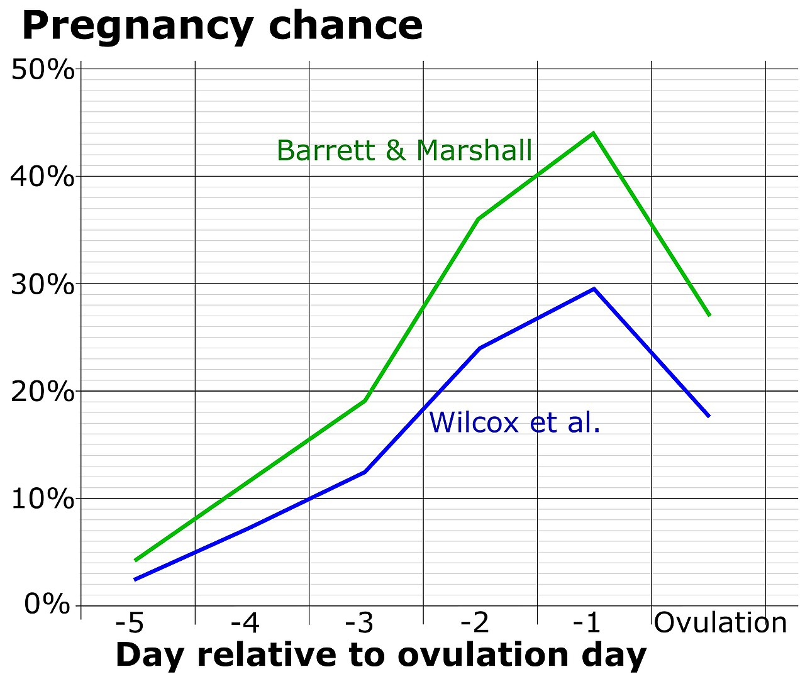

Lầm Tưởng "Chỉ Thụ Thai Vào Ngày Rụng Trứng" So Với Cửa Sổ Sinh Học 6 Ngày
Một trong những lầm tưởng phổ biến nhất về sức khỏe sinh sản là cho rằng việc thụ thai chỉ có thể xảy ra vào đúng ngày trứng rụng—hoặc ngược lại, lo lắng rằng việc mang thai có thể xảy ra vào bất kỳ ngày ngẫu nhiên nào trong tháng.
Trong một công trình nghiên cứu lâm sàng tiến cứu kinh điển đăng trên tạp chí y khoa danh giá nhất thế giới New England Journal of Medicine (NEJM) (Wilcox, Weinberg, & Baird, 1995), các nhà khoa học tại Viện Khoa học Sức khỏe Môi trường Quốc gia Hoa Kỳ (NIH) đã phân tích mẫu nước tiểu hàng ngày của 221 phụ nữ khỏe mạnh để xác định chính xác thời điểm rụng trứng và theo dõi mọi lần quan hệ tình dục dẫn đến mang thai.
Kết quả của họ đã định hình lại toàn bộ y học sinh sản hiện đại: 100% các ca mang thai lâm sàng đều đến từ việc quan hệ trong một khung thời gian 6 ngày nghiêm ngặt—bao gồm 5 ngày trước khi rụng trứng cộng với chính ngày rụng trứng. Không có bất kỳ sự thụ tinh nào xảy ra khi quan hệ trước ngày rụng trứng từ 6 ngày trở lên, và cũng không có ca thụ thai nào xảy ra sau khi trứng rụng quá 24 giờ!

Vì Sao 2 Ngày Trước Khi Rụng Trứng Lại Có Tỷ Lệ Đậu Thai Cao Hơn Cả Ngày Rụng Trứng?
Tại sao cửa sổ thụ thai lại kéo dài tới 6 ngày trong khi tế bào trứng của người chỉ sống được chưa đầy một ngày? Câu trả lời nằm ở sự chênh lệch đáng kinh ngạc giữa tuổi thọ của Noãn bào (Trứng) và tuổi thọ của Tinh trùng (Spermatozoa):
- Đồng Hồ Đếm Ngược 12–24 Giờ Của Trứng: Ngay khi nang trứng trội vỡ ra vào thời điểm rụng trứng (Ngày 0), noãn bào được loa vòi trứng đón vào đoạn bóng của ống dẫn trứng. Nếu không được thụ tinh trong vòng 12 đến 24 giờ, tế bào trứng sẽ nhanh chóng lão hóa và tự tiêu biến.
- "Trạm Dự Trữ" Tinh Trùng 5 Ngày Tại Cổ Tử Cung: Trong những ngày không thụ thai, tinh trùng sẽ chết chỉ sau vài giờ trong môi trường axit của âm đạo. Thế nhưng ở cuối pha Nang trứng, làn sóng Estradiol làm đầy cổ tử cung bằng lớp dịch nhầy trong suốt như lòng trắng trứng (EWCM) có tính kiềm và giàu dưỡng chất. Tinh trùng bơi vào các tuyến hốc cổ tử cung—nơi chúng được bảo vệ, nuôi dưỡng và phóng thích từng đợt lên tử cung suốt 120 giờ (5 ngày trọn vẹn).
- Lợi Thế "Khả Năng Hóa" (Capacitation): Tinh trùng vừa phóng thích chưa thể xuyên thủng vỏ trứng ngay lập tức; chúng cần trải qua quá trình trưởng thành sinh hóa kéo dài 7 đến 10 giờ gọi là Capacitation (Khả năng hóa) bên trong đường sinh dục nữ để làm mềm mũ cực đầu (Acrosome) và kích hoạt chuyển động quẫy đuôi siêu động. Do đó, việc có sẵn đội ngũ tinh trùng khỏe mạnh, đã hoàn tất khả năng hóa nằm chờ sẵn ở ống dẫn trứng trước khi trứng rụng sẽ mang lại xác suất thụ thai cao nhất!
| Ngày Tương Quan Với Rụng Trứng | Trạng Thái Sinh Học Trong Đường Sinh Dục Nữ | Xác Suất Thụ Thai Trong Ngày (Wilcox et al., NEJM) | Chỉ Số Thiết Bị Đeo & Dấu Ấn Sinh Học |
|---|---|---|---|
| Ngày −6 trở về trước | Dịch nhầy cổ tử cung loại G đặc và axit ngăn cản tinh trùng. | 0% | Nhiệt độ da ở nền thấp pha Nang trứng; dịch khô hoặc dính đặc. |
| Ngày −5 đến Ngày −4 | Estradiol tăng mở các tuyến hốc cổ tử cung; những tinh trùng bền bỉ nhất có thể sống sót đợi trứng. | 4% – 10% (Thấp – Trung bình) | Nhiệt độ nền thấp; dịch cổ tử cung chuyển sang dạng kem ẩm. |
| Ngày −3 | Hệ gel cổ tử cung loại E giàu nước tích cực lưu trữ và dẫn đường cho tinh trùng. | 15% (Cao) | HRV cao, RHR thấp; bắt đầu xuất hiện dịch nhầy trong và co giãn. |
| Ngày −2 (Trước 2 ngày) | Nguồn tinh trùng tối ưu đã chờ sẵn tại ống dẫn trứng trước giờ trứng phóng thích. | 27% – 30% (Đỉnh Điểm Thụ Thai) | Đỉnh Estradiol; Đỉnh sóng LH bắt đầu (que thử rụng trứng 2 vạch đậm); đỉnh dịch EWCM. |
| Ngày −1 (Trước 1 ngày) | Tinh trùng mới, đã hoàn tất khả năng hóa, gặp trứng ngay khoảnh khắc nang trứng vỡ. | 31% – 33% (Đỉnh Điểm Thụ Thai) | Đỉnh sóng LH; nhiệt độ đêm có thể chạm đáy nhẹ trước rụng trứng (−0.3°C). |
| Ngày 0 (Ngày Rụng Trứng) | Trứng phóng thích và chỉ sống 12–24 giờ; tinh trùng xuất phát muộn cuối ngày có thể không kịp hoàn tất khả năng hóa. | 12% – 33% (Giảm Nhanh Cuối Ngày) | Trứng rụng; Hoàng thể bắt đầu hình thành và tiết Progesterone. |
| Ngày +1 đến Kỳ Kinh | Trứng đã tiêu biến; Progesterone khóa kín nút nhầy cổ tử cung trong vòng 24 giờ. | 0% | Nhiệt độ da ban đêm tăng +0.3°C đến +0.5°C; RHR tăng +3 đến +7 bpm. |
Cách Phối Hợp Đa Cảm Biến Để Định Vị Chính Xác Cửa Sổ 6 Ngày
Vì mỗi chỉ dấu sinh học đơn lẻ chỉ phản ánh một mắt xích, việc kết hợp 3 tín hiệu bổ trợ lẫn nhau—như trên hệ sinh thái Oura Ring, Natural Cycles°, Apple Watch và Clue—sẽ biến việc theo dõi khả năng sinh sản thành một hệ thống định vị chính xác:
1. Tiếng Chuông Mở Cửa (Ngày −5 đến −2): Dịch Nhầy Cổ Tử Cung Màu Mỡ
Ngay khi bạn nhận thấy dịch nhầy chuyển từ khô/dính sang dạng kem ẩm, ướt và trong suốt kéo sợi (như lòng trắng trứng), đó là tín hiệu Estradiol đang tăng vọt từ nang trứng trưởng thành. Hành động: Hãy coi ngày đầu tiên xuất hiện dịch ướt/kem là ngày mở màn của cửa sổ thụ thai 6 ngày.
2. Đồng Hồ Đếm Ngược 24–36 Giờ (Ngày −2 đến −1): Que Thử Đỉnh LH Nước Tiểu (OPK)
Que thử rụng trứng (OPK) phát hiện sự bùng nổ của Hormone tạo hoàng thể (LH) trong nước tiểu. Khi vạch thử đậm bằng hoặc đậm hơn vạch đối chứng, tuyến yên đã phát lệnh phóng thích trứng—đồng nghĩa trứng sẽ rụng trong vòng 12 đến 36 giờ tới. Đây chính là công cụ khóa mục tiêu vào 2 ngày có xác suất cao nhất (Ngày −2 và Ngày −1).
3. Dấu Ấn Đóng Cửa (Ngày +1 đến +3): Nhiệt Độ Ban Đêm Trên Thiết Bị Đeo
Sau khi đồng hồ hoặc nhẫn thông minh ghi nhận 3 đêm liên tiếp nhiệt độ da tăng cao (+0.3°C đến +0.5°C trên đường cơ sở pha Nang trứng) đi kèm mức tăng RHR đặc trưng của pha Hoàng thể, quá trình rụng trứng được xác nhận đã hoàn tất và cửa sổ thụ thai chính thức khép lại cho đến hết chu kỳ.
Phác Đồ Ứng Dụng Thực Tế: Chuẩn Bị Mang Thai (TTC) & Tránh Thai Tự Nhiên
Phác Đồ A: Tối Ưu Hóa Khả Năng Mang Thai Tự Nhiên (TTC)
- Quy Tắc Quan Hệ "Cách Ngày Hoặc Hàng Ngày": Theo khuyến nghị lâm sàng của Hiệp hội Y học Sinh sản Hoa Kỳ (ASRM), việc quan hệ tình dục mỗi 1 đến 2 ngày một lần trong suốt cửa sổ 5 ngày trước và trong ngày rụng trứng mang lại tỷ lệ thụ thai cao nhất, đồng thời giữ mật độ và độ di động của tinh trùng ở mức tối ưu.
- Đừng Đợi Nhiệt Độ Đồng Hồ Tăng Mới Hành Động! Nếu bạn đợi đến khi thiết bị đeo báo nhiệt độ tăng
+0.4°Cmới bắt đầu quan hệ, bạn đã lỡ mất thời cơ—vì trứng đã rụng từ 24–48 giờ trước đó! Hãy bắt đầu ngay khi thấy dịch nhầy ẩm/trong suốt hoặc khi ứng dụng dự báo mở cửa sổ thụ thai, và tập trung cao nhất khi que thử LH lên 2 vạch. - Chọn Gel Bôi Trơn Thân Thiện Với Tinh Trùng: Các loại gel bôi trơn thông thường thường có độ pH thấp và áp suất thẩm thấu cao làm bất hoạt tinh trùng. Nếu đang mong con, hãy chọn gel bôi trơn hỗ trợ sinh sản đẳng trương (
pH 7.0–7.5, bổ sung ion Canxi và Magie).
Phác Đồ B: Quản Lý Chu Kỳ & Tránh Thai Không Nội Tiết (FADMs)
- Thuật Toán Tránh Thai Kỹ Thuật Số Được FDA Chứng Nhận (Natural Cycles° + Oura / Apple Watch): Vì tinh trùng có thể sống tới 5 ngày trước khi rụng trứng—và thời điểm rụng trứng đôi khi đến sớm hơn dự kiến vài ngày—các thuật toán y khoa luôn cộng thêm khoảng đệm an toàn ở đầu chu kỳ (Ngày Đỏ / Red Days = Có khả năng thụ thai / Cần dùng biện pháp bảo vệ), và chỉ chuyển sang Ngày Xanh / Green Days (Không thụ thai) sau khi thiết bị đeo xác nhận nhiệt độ đã duy trì ở cao nguyên pha Hoàng thể đủ 3 ngày liên tiếp.
Tài Liệu Tham Khảo & Nguồn Y Khoa
- Wilcox, A. J., Weinberg, C. R., & Baird, D. D. (1995). Timing of sexual intercourse in relation to ovulation—effects on the probability of conception, survival of the pregnancy, and sex of the baby. New England Journal of Medicine (NEJM), 333(23), 1517–1521. Đọc trên PubMed / NIH ↗
- Practice Committee of the American Society for Reproductive Medicine (ASRM). (2022). Optimizing natural fertility: a committee opinion. Fertility and Sterility, 117(1), 53–63. Đọc trên PubMed / NIH ↗
- Pearson, J. T., et al. (2021). Evaluation of the performance of the Natural Cycles algorithm using Oura Ring nocturnal skin temperature. European Journal of Contraception & Reproductive Health Care, 26(2), 105–110. Đọc trên PubMed / NIH ↗
- Natural Cycles° Fertility Guide. Understanding the 6-Day Fertile Window & Ovulation Timing. Đọc trên Natural Cycles ↗